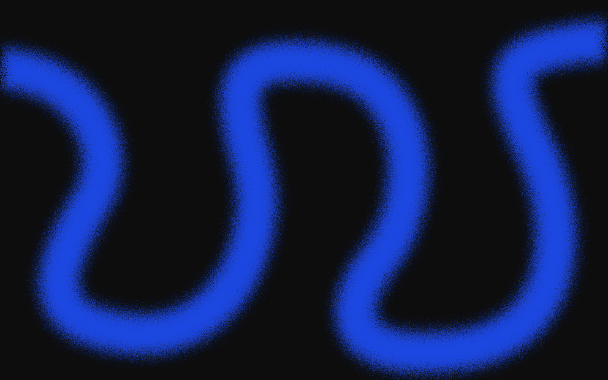

Grau, Schwarz& ein Kobalt.
Ein Poster-System: eine Schrift, drei Farben, dicke Linien mit Metadaten, und drei Effekte – Riffelglas, Fokus-Unschärfe und die gesprenkelte Linie.
Der Pfeil „>“ über dem J steht für Eingabe → Ergebnis. Schutzraum mindestens Pfeilhöhe; Mindestbreite 8 mm im Druck, 20 px am Bildschirm.
Das JW-Monogramm

jw-mark-on-ink.svg
jw-mark-on-signal.svgGrau ist das Papier, Schwarz trägt alles, Kobalt kommt sparsam: Status, Pfeil, die Linie, ein Akzent pro Fläche.
Drei Farben
Druck: Kobalt liegt am Rand des CMYK-Farbraums und wird im Vierfarbdruck etwas stumpfer. Für Visitenkarten Ton per Proof mit der Druckerei abstimmen oder eine Pantone-Sonderfarbe wählen.
Inter Tight, frei über Google Fonts (SIL Open Font License). Headlines 600, Spationierung −5 bis −7 %.
Eine Schrift
Websites
Persönlich entwickelt.
Ich baue dir eine moderne Website – persönlich, ehrlich und ohne Fachchinesisch.
Für Selbstständige & kleine Betriebe — Referenzen
Riffelglas legt sich über Typografie, dicke Linien rahmen jede Fläche wie ein Poster, die gesprenkelte Linie steht für einen Ablauf, der von allein läuft.
Drei Effekte
Persönlich entwickelt.
WahrheitNo. 01Websites &
Automationen
Poster

85 × 55 mm, 3 mm Beschnitt. Druckvorlage öffnen